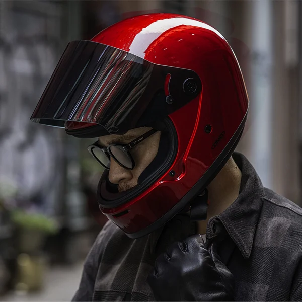
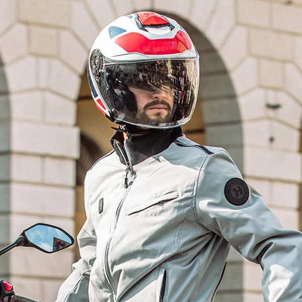

Strada
Integrali
Per strada, turismo e guida sportiva. Confronta forme, materiali e ventilazione, poi prova la taglia con noi.
Esplora integraliCaschi aperti e compatti da confrontare per i tuoi tragitti urbani e in scooter.

Nel reparto trovi caschi jet e demi jet. Porta con te le tue esigenze di ingombro e di comfort: vediamo insieme quale modello provarci.
Chiedi di jetPer modelli, taglie e disponibilità, chiedi al negozio o passa in Via Trino 200.